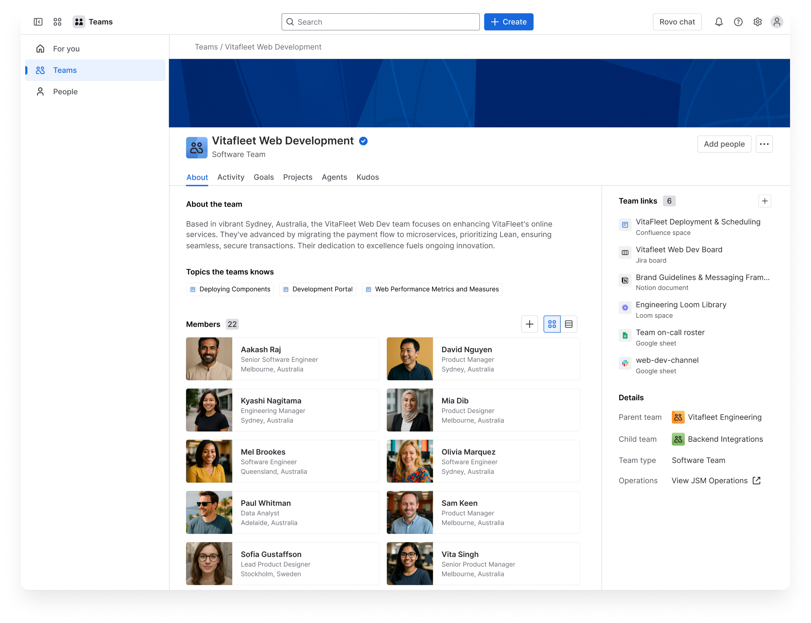

Team profile page
Teams are the backbone of how work gets done, but only when they’re visible, understood, and connected. At Atlassian, I helped design the Teams app to make teams the organising principal for work across the ecosystem. This work focused on helping people quickly understand who’s working on what, why it matters, and how to collaborate effectively, while also giving admins the flexibility to model real-world team structures and drive adoption at scale. The result was a system that balanced organisational needs with everyday team workflows, turning teams from abstract concepts into discoverable, actionable units of work.
Teams is one of Atlassian's platform apps: pre-loaded onto every site by default, alongside Home, Goals, Analytics, and Rovo. Where Jira and Confluence are products customers choose, Teams ships automatically as shared infrastructure.
As Atlassian’s product suite has expanded, customers struggle to understand where work happens, how teams connect, and how efforts ladder up to broader goals. The Teams experience aims to solve this by creating a single source of truth for team identity, purpose, and work. Helping people find the right team, see what they’re working on, and understand how it fits into the bigger picture - how does this team and their projects contribute to the companies goals..
Atlassian’s wide range of tools has grown over time, leaving some customers unsure where work lives and how to bring it all together.
Formal org structures rarely match how teams collaborate day to day - Teams are created often by admins, but also spun up within tribes and segments within the organisation. Teams are regarded as an official tag, rather than a direct association to actual work being done.
Admins were accountable for how teams were set up and maintained, yet lacked clear tools to manage consistency, ownership, and definition at scale. Teams in the end, are not able to be differentiated between what is a official team vs. teams that are created for ad-hoc purposes.
Work objects existed in silos, with no shared layer to connect them back to the teams doing the work. It is still very much a container created for the sake of officiating a team.
Our new uplifted people and teams directory - with preview panels for easy navigation and new team and member profile pages to see contextual information about how teams and individuals contribute towards goals and projects.
Separation allows each directory to optimise for its own interaction model.
Search relevance improves when entity types are not competing.
Filters become simpler, not fewer, because they’re contextual.
Teams were attached to containers and objects, but lacked purpose beyond membership. To scale, they needed to become the organising principle for work and access.
This workshop focused on aligning how teams are structured with how permissions actually work today, and what levers we should be giving to organisation admins to help them distinguish each team and what their purpose is.
There was a need for delegation of day-to-day management to team owners, whilst still giving admins the ability to define, control, and visualise hierarchy across the organisation.
Enterprises need to model teams in ways that reflect their internal structure with controlled, organisation-specific attributes tied to each team type.
We tested our final iterations with organisation admins with more than 50+ teams set up, to validate if the new team types and hierarchy implementation helped them have clearer view of what team’s purposes are.
Parent–child teams allow admins and team managers to model real hierarchy and make it discoverable in the team directory.
Working with the Rovo AI team to include smart and rich contextual information for Rovo prompts, to get organisation members up to speed on the latest developments on the team
Results based on roll out to 30% of Paid Enterprise Customers over 1 month - 5% rollout to complex enterprise entities (many teams to consolidate from HRIS)